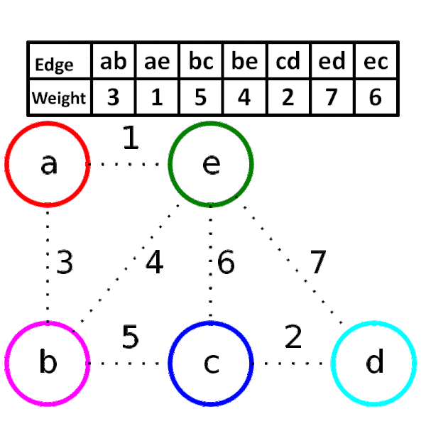

Overview
Kruskal’s Algorithm follows the Greedy Algorithm to construct a Minimum Spanning Tree for a connected, weighted, and undirected graph. This algorithm treats the graph as a forest and its vertices as an individual tree. The aim of this algorithm is to find a subset of the edges that forms a tree that includes every vertex with minimum edges.
A single graph can have many different spanning trees. A minimum spanning tree for a weighted, connected, and the undirected graph is a spanning tree with the sum of edges weight is less than or equal to the sum of edges weight of every other spanning tree.

Algorithm
Kruskal()
solve all edges in ascending order of their weight in an array e
ans = 0
for i = 1 to m
v = e.first
u = e.second
w = e.weight
if merge(v,u) // there will be no cycle
then ans += w
Implementation
Step 1 : Sort all the edges in non-decreasing order of their weight.
Step 2 : Pick the smallest edge. Check if it forms a cycle with the spanning tree formed so far using Union Find data-structure. If cycle is not formed, include this edge else, discard it.
Step 3 : Repeat Step 2 until there are (V-1) edges in the spanning tree.
Time Complexity
- Sorting of edges takes O(ELogE) time.After sorting, we iterate through all edges and apply find-union algorithm.
- The find and union operations can take at most O(LogV) time.
- So overall complexity is O(ELogE + ELogV) time.
- The value of E can be at most O(V²), so O(LogV) is O(LogE) the same.
- The overall time complexity is O(ElogE) or O(ElogV).